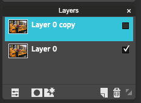

How Do I Do It?
Video:
Or in writing:
0. First, you'll need a picture! A website like Unsplash or Pexels is a really good place to look.
Make sure that the picture you choose has some part that's a bright color. When you find something you like, save it in your IT Club folder.
1. Go to Pixlr, and open your image:
2. You'll need to unlock your background image. In the Layers Bar, find the lock, and double-click on it:
It will change to show a checkbox and say Layer 0:
3. Next, you'll need to make a copy of your picture. Right-click on Layer 0, then click Duplicate layer.
4. You now have two layers that are exactly the same. Let's hide the top layer (don't worry, we'll bring it back later!): uncheck the box next to Layer 0 copy.

5. Next, you'll need to make the bottom layer black and white. Click Layer 0, so it looks like this:
6. Now, to make it black and white! First, click Adjustment, then click Hue and Saturation.
7. In the box that pops up, slide the middle slider (the one that says Saturation) all the way down:
You'll see your image turn to black and white. Why? Because saturation refers to how intense the colors are. If you take it all the way down, no more color!
8. Next, it's time to work with the other layer. In the Layers Bar, you'll need to click on Layer 0 copy, then check the box next to it so you can see it again:
9. On the bottom of the Layers Bar, click the layer mask button.
10. Next, you'll use a brush to add color to any part of the image you want. First, click the brush tool:
...and then choose a brush from the top row:
11. Now, use that brush to add color to whatever part of your image you want!
If you paint in short strokes - release the mouse often - there will be less to do over if you make a mistake.
12. If you paint outside the area you want to change, you can Undo, or you can use the Eraser tool to remove the color.
13. You can add color to more than one part of your image, or just one. It's all up to you! When you're happy with how it looks, then you're done! Way to go:
When you're done...
- Make sure your creation is saved...
- as a .PNG
- with a useful name
- in your folder for this club
- Extend your skills: try...
- the reverse of this: make a mostly colorful image with parts that are black and white
- repeating this process with a different filter instead of black and white
(for example, the frogs on the right were done with the noise filter)
- creating a collage with several versions of the same image, where each has a different part colored
- Go back and choose something else!